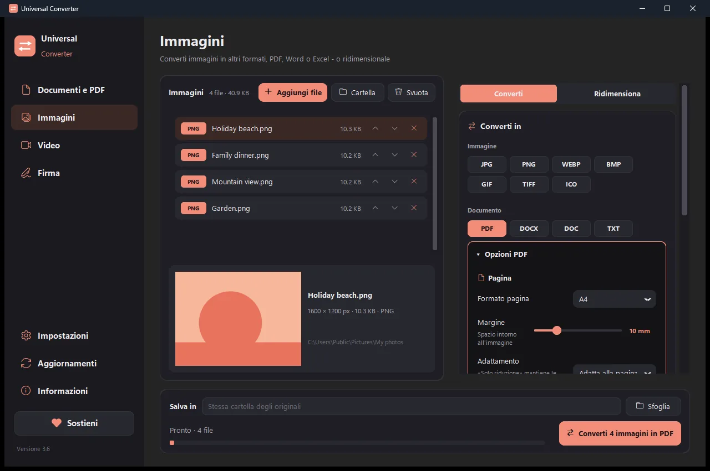
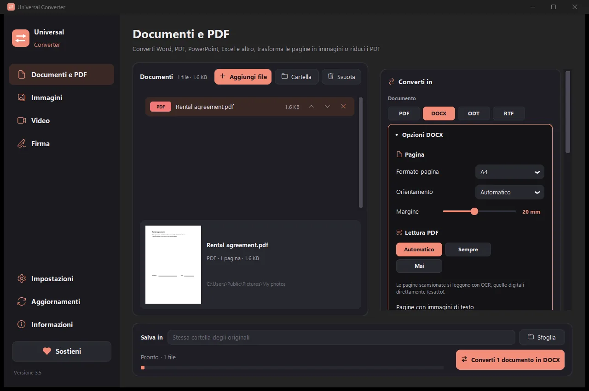
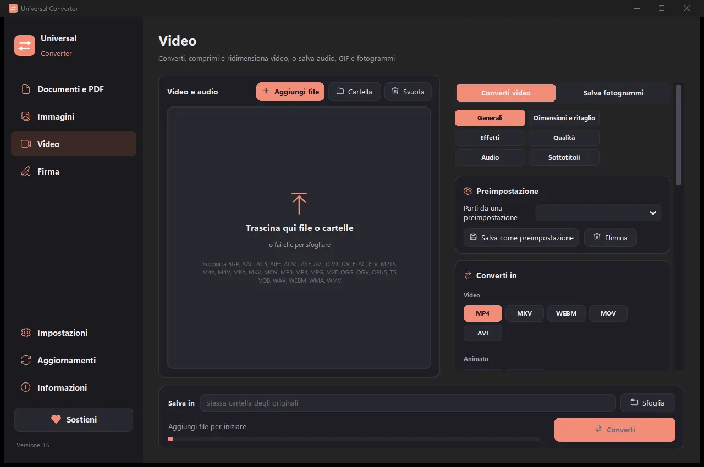
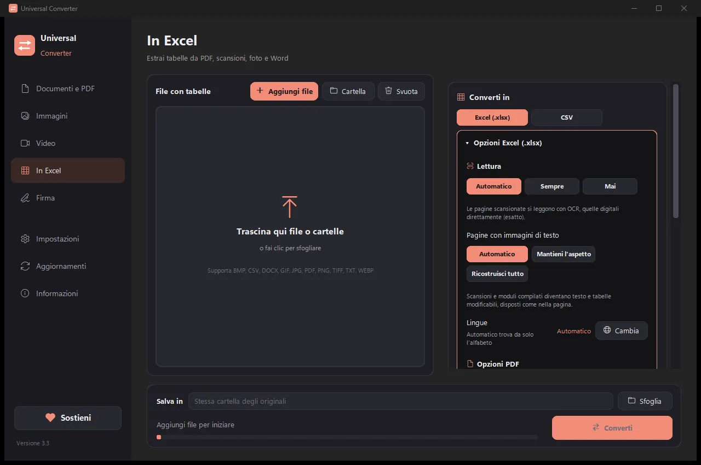
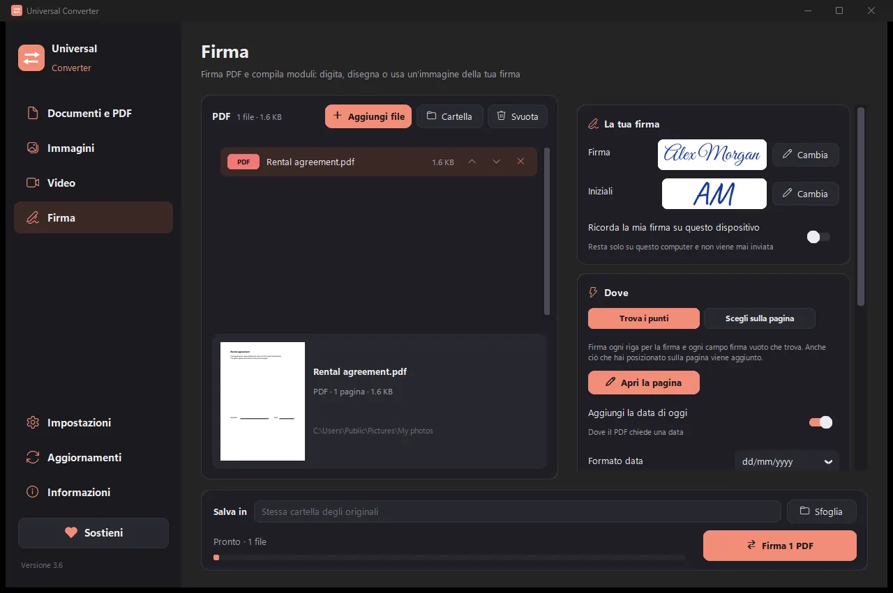
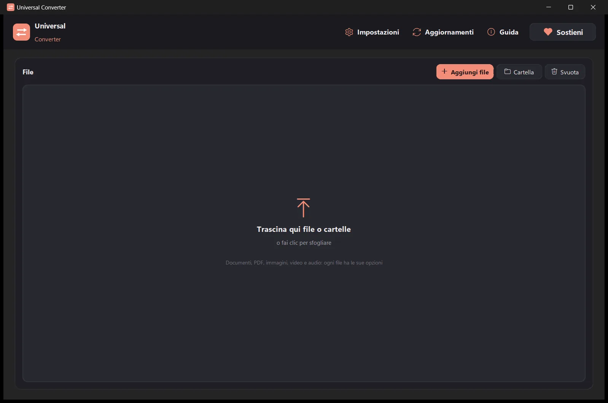

Converti i tuoi file sul tuo dispositivo
Immagini, documenti, video e audio, PDF e tabelle in Excel, tutto in un'unica app. Non viene caricato nulla: i tuoi file non lasciano mai il dispositivo.
Come installare e aggiornare
- Apri il file .dmg scaricato e trascina Universal Converter in Applicazioni.
- Apri l'app. La prima volta macOS la blocca perché non è firmata da Apple: fai clic su Fine.
- Apri Impostazioni di Sistema > Privacy e sicurezza, scorri in basso, fai clic su «Apri comunque» e inserisci la password. Si fa una sola volta.
Aggiornamenti: se lo consenti alla prima apertura, l'app cerca nuove versioni a ogni avvio, ne verifica la firma digitale e le installa quando scegli tu.
Come installare e aggiornare
- Tocca «Scarica per Android» dal telefono.
- Apri il file scaricato. Se Android lo chiede, consenti al browser o al gestore file di installare app.
- Tocca Installa.
Aggiornamenti: l'app controlla circa una volta al giorno e ti avvisa quando c'è una nuova versione. Scaricala allo stesso modo e installala sopra quella vecchia; le impostazioni restano.
Come installare e aggiornare
- Scarica il file .AppImage.
- Rendilo eseguibile: clic destro, Proprietà > Permessi e consenti di eseguirlo come programma (oppure in un terminale: chmod +x Universal-Converter-*.AppImage).
- Fai doppio clic. Non si installa nulla: l'app è questo unico file.
Aggiornamenti: se lo consenti alla prima apertura, a ogni avvio cerca nuove versioni, ne verifica la firma digitale e sostituisce il file AppImage dove si trova.

Privato
Tutto avviene sul tuo dispositivo. Nessun caricamento, nessuna coda, nessun limite di dimensione.
Gratis
Gratuito, senza pubblicità, senza account e senza filigrane.
34 lingue
Italiano, inglese, greco, spagnolo, tedesco, francese, portoghese (Portogallo e Brasile), polacco, russo, arabo, ebraico, cinese, giapponese, coreano, tamil, afrikaans, yoruba, hausa, hindi, indonesiano, turco, vietnamita, svedese, olandese, danese, ucraino, ceco, rumeno, bulgaro, norvegese, malese, filippino e swahili.
Cinque strumenti in una finestra

Documenti e PDF
Converti tra PDF, Word, ODT, RTF, TXT, Markdown, HTML, EPUB, PowerPoint ed Excel. Trasforma pagine in immagini e unisci più file in un PDF. Caratteri, dimensioni e colori vengono mantenuti. Riduci i PDF alla dimensione che scegli. Scansioni e moduli compilati diventano testo e tabelle modificabili, disposti come nella pagina. Le tabelle, anche senza linee come negli estratti conto, arrivano in Word come vere tabelle, e si aprono anche i vecchi file Word (.doc) e PowerPoint (.ppt).
Immagini
Converti tra JPG, PNG, WEBP, TIFF, BMP, GIF e ICO. Ridimensiona in pixel, percentuale o dimensione del file, unisci immagini in un PDF o Word e leggi il testo nelle immagini (OCR). Accetta anche PDF: ogni pagina diventa un'immagine.

Video
Converti video tra MP4, MKV, WebM, MOV e AVI, e comprimili, con AV1, H.265, H.264 o VP9. Taglia, ritaglia, ruota e ridimensiona, crea GIF, salva fotogrammi come immagini o tieni solo l'audio in MP3, M4A, AAC, FLAC, WAV, AIFF, OGG, AC-3, MP2, WavPack, MKA, CAF o Opus. Con più video, ognuno può avere le proprie impostazioni. Su Android: MP4, MKV, WebM, MOV o GIF, oppure solo l'audio in MP3, M4A, AAC, OGG, Opus, FLAC, WAV, AIFF o MKA; taglio, ritaglio, rotazione, ridimensionamento e salvataggio di fotogrammi.

Excel
Estrai tabelle da PDF, scansioni e foto in Excel o CSV: estratti conto, fatture, listini prezzi. Legge italiano, inglese, greco e oltre 30 altre lingue.

Firma
Firma PDF e compila moduli. Digita il tuo nome in uno stile a mano, disegna la firma o usa una sua foto. L'app trova da sola le righe per la firma, oppure fai clic dove vanno firma, iniziali, data, testo o spunte. Firma molti file insieme; gli originali restano intatti.
- Usa la scheda grafica per i video quando può: di solito da 5 a 20 volte più veloce.
- Trascina intere cartelle: tutti i file vengono convertiti in una volta.
- Una schermata per ogni file: aggiungi insieme documenti, immagini e video, e ognuno ha le sue opzioni.
- Ti avvisa delle nuove versioni; su Windows, Mac e Linux può installarle per te, verificate digitalmente.
- Aspetto chiaro o scuro, come il tuo dispositivo.
Come funziona
- Apri Universal Converter.
- Trascina i file o un'intera cartella nella finestra, oppure fai clic su Aggiungi file.
- Fai clic su Converti. I nuovi file vengono salvati accanto agli originali o nella cartella che scegli.

Cosa può fare
- Convertire un PDF in Word
- Convertire documenti Word in PDF
- Unire più file in un PDF
- Comprimere un PDF alla dimensione che scegli
- Comprimere un PDF a 100 KB, 200 KB o alla dimensione richiesta da un modulo
- Convertire pagine PDF in immagini JPG
- Trasformare un documento scansionato in un Word modificabile
- Convertire immagini tra JPG, PNG, WEBP e altri formati
- Ridimensionare immagini o ridurle a una dimensione del file
- Ridimensionare una foto o una firma a 20 KB, 50 KB o pixel esatti
- Unire foto in un unico PDF
- Da JPG a PDF sotto i 100 KB
- Copiare il testo da un'immagine (OCR)
- Comprimere un video senza caricarlo
- Convertire video tra MP4, MKV, WebM, MOV e AVI
- Salvare l'audio di un video in MP3
- Creare una GIF da un video
- Estrarre tabelle da un PDF in Excel
- Convertire un estratto conto PDF in Excel
- Estrarre tabelle da fatture PDF in Excel
- Firmare un PDF
- Compilare un modulo PDF
Domande
È davvero gratis?
Sì. Universal Converter è gratuito, senza pubblicità, senza account e senza limiti di tempo. Se ti è utile, puoi sostenerne lo sviluppo con un contributo volontario, ma non è mai obbligatorio.
I miei file vengono caricati da qualche parte?
No. Ogni conversione avviene sul tuo dispositivo, quindi funziona anche senza connessione a internet. L'app si collega solo per controllare gli aggiornamenti, per scaricare gli alfabeti di riconoscimento del testo che scegli e, se lo consenti, per inviare segnalazioni di errori anonime.
È sicuro scaricarlo?
Sì. Prima di arrivare su questa pagina, i download per Windows, Mac, Linux e Android di ogni versione vengono analizzati da circa 60–70 antivirus su VirusTotal; il link sotto ogni pulsante di download apre il rapporto di quel file. L'app non mostra pubblicità e non raccoglie dati personali, e la versione del Microsoft Store è anche controllata e firmata da Microsoft.
Windows mostra un avviso SmartScreen. È normale?
Sì. Il programma di installazione non ha ancora una firma del codice, quindi Windows non lo riconosce. Scegli «Ulteriori informazioni», poi «Esegui comunque». Gli aggiornamenti successivi sono verificati digitalmente dall'app stessa. Oppure installalo da Microsoft Store, che non mostra avvisi.
Come lo apro su un Mac?
Apri il file scaricato e trascina Universal Converter in Applicazioni. L'app non è firmata da Apple, quindi la prima volta che la apri macOS la blocca: fai clic su Fine, poi apri Impostazioni di Sistema > Privacy e sicurezza, fai clic su «Apri comunque» e inserisci la password. Basta farlo una volta.
Come lo installo su Android?
Scarica l'APK sul telefono, aprilo e consenti l'installazione quando richiesto (Android 10 o successivo). Tutte le 34 lingue sono incluse; scegline una nelle Impostazioni dell'app. L'app ti avvisa quando c'è una nuova versione.
In quali lingue è disponibile?
L'app è in italiano, inglese, greco, spagnolo, tedesco, francese, portoghese (Portogallo e Brasile), polacco, russo, arabo, ebraico, cinese, giapponese, coreano, tamil, afrikaans, yoruba, hausa, hindi, indonesiano, turco, vietnamita, svedese, olandese, danese, ucraino, ceco, rumeno, bulgaro, norvegese, malese, filippino e swahili. Scegli la lingua durante l'installazione o in seguito nelle Impostazioni.